Explore Culture in Paris
Cuisine
 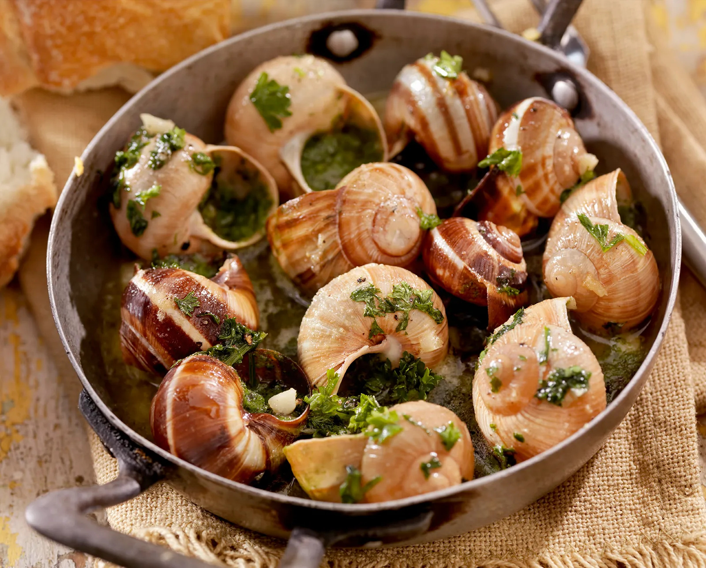
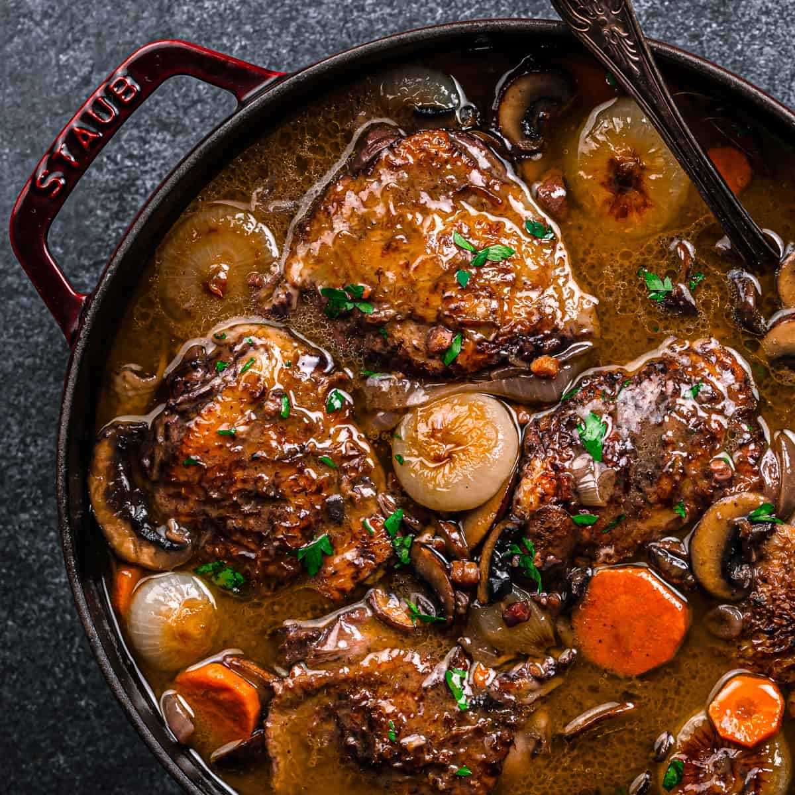
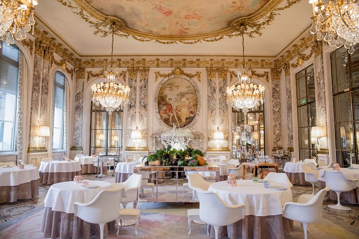
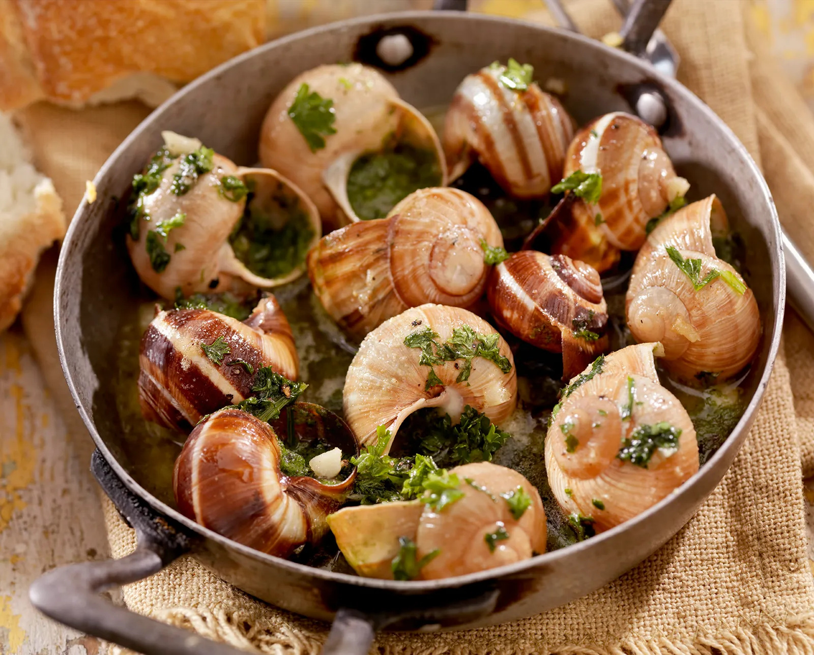
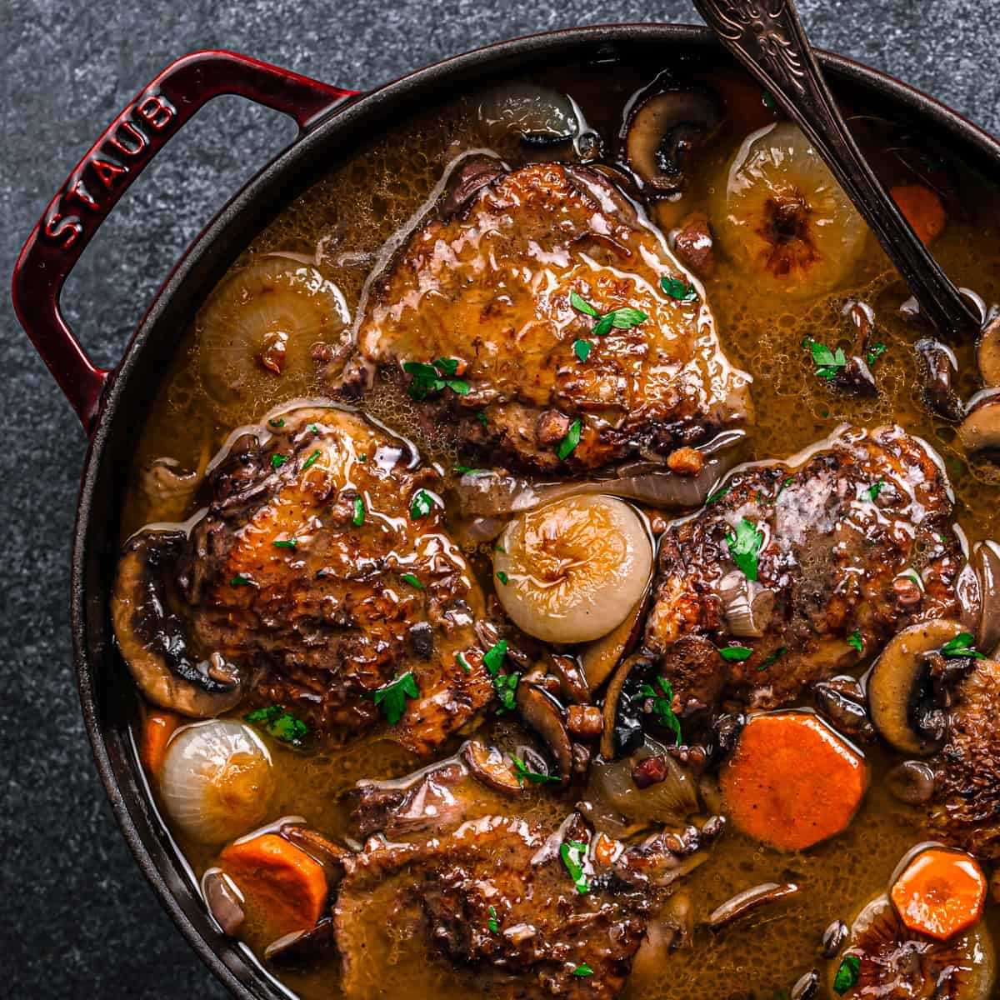
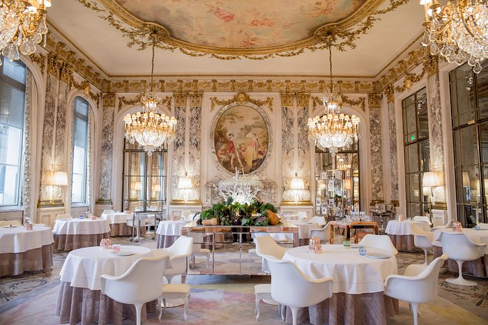
Paris is a culinary paradise, offering an array of delicious French dishes. Don't miss trying:
- Croissants: Flaky, buttery pastries best enjoyed fresh from a local bakery.
- Escargot: Snails cooked in garlic butter, a classic delicacy.
- Coq au Vin: A traditional dish of chicken braised with wine, mushrooms, and lardons.
Popular dining spots include Le Meurice, Café de Flore, and Ladurée for delightful pastries.
Fashion and Shopping
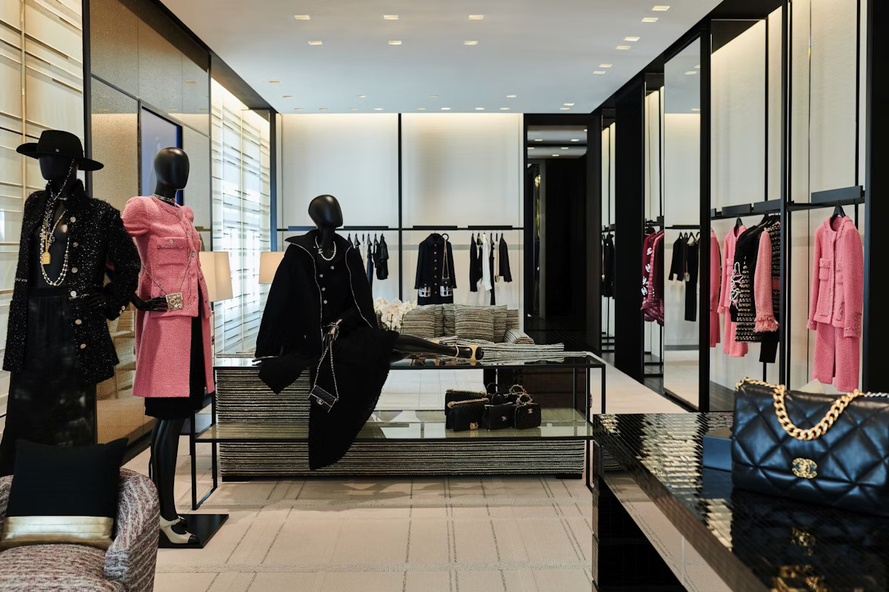
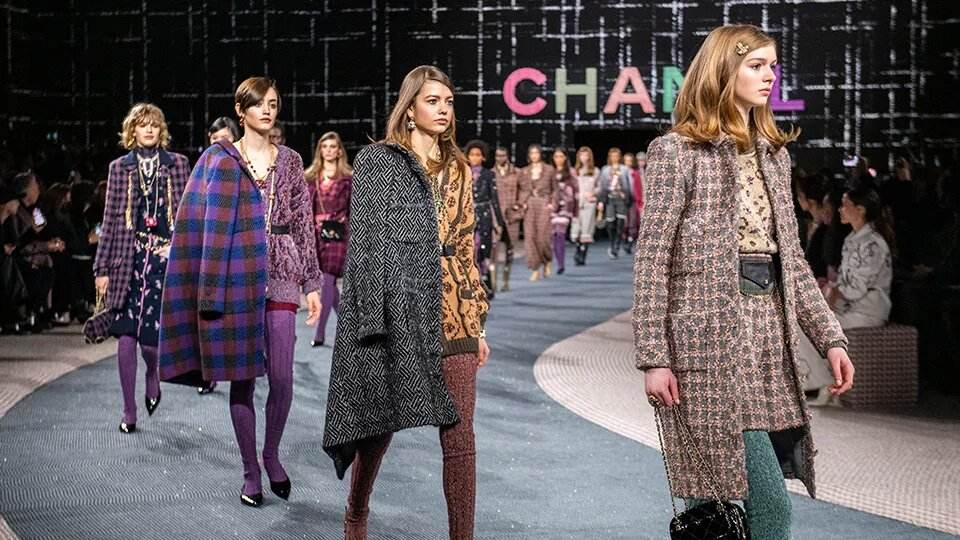
Paris is known as the fashion capital of the world. Renowned designers like Chanel, Dior, and Louis Vuitton have their flagship stores here. Key shopping areas include:
- Champs-Élysées: A famous avenue with luxury boutiques and shops.
- Le Marais: A trendy district filled with independent boutiques and vintage shops.
Don’t forget to explore the local markets for unique finds!
Festivals and Events
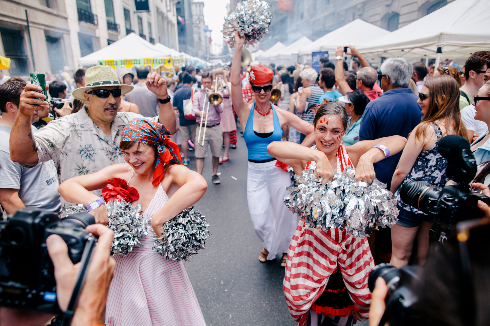
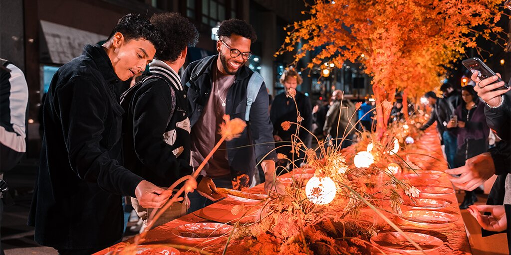
Paris hosts a variety of cultural events throughout the year:
- Bastille Day: Celebrated on July 14th, marking the French Revolution with fireworks and parades.
- Nuit Blanche: An annual all-night arts festival held in October, featuring art installations and performances throughout the city.
- Paris Fashion Week: A biannual event where top designers showcase their latest collections.
Music and Theater
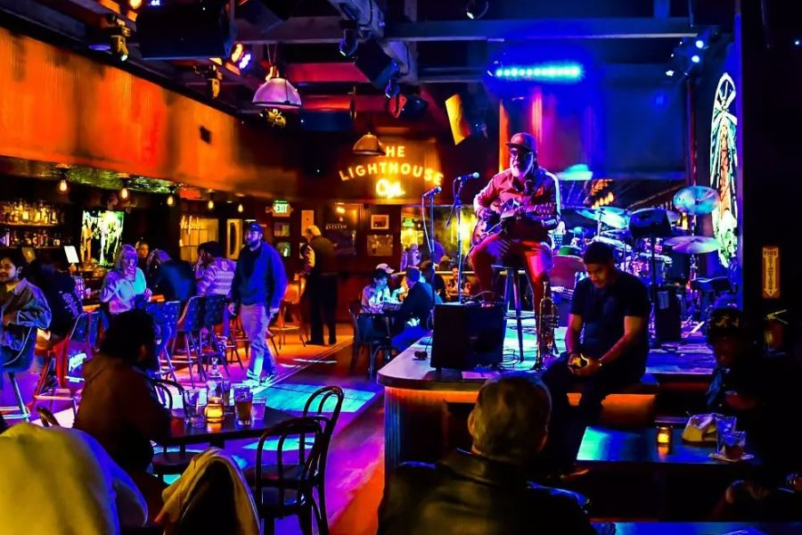
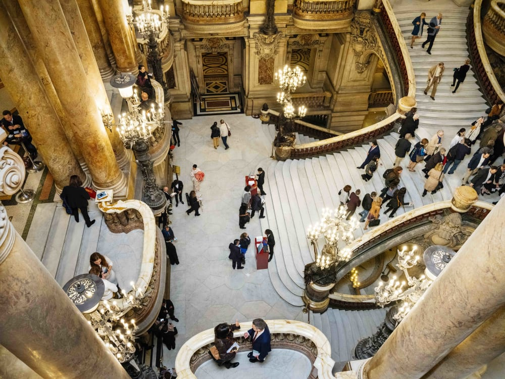
The music scene in Paris is vibrant and diverse:
- Jazz Clubs: Enjoy live performances at famous spots like Le Caveau de la Huchette.
- Concert Halls: Visit the Philharmonie de Paris for classical music concerts.
- Theater: Don't miss performances at the Palais Garnier, the stunning opera house, and Théâtre de la Ville for contemporary works.
Whether you're into classical, jazz, or modern music, Paris has something to offer everyone.